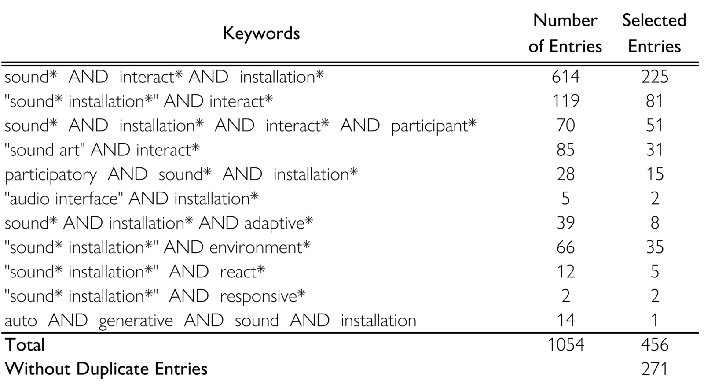
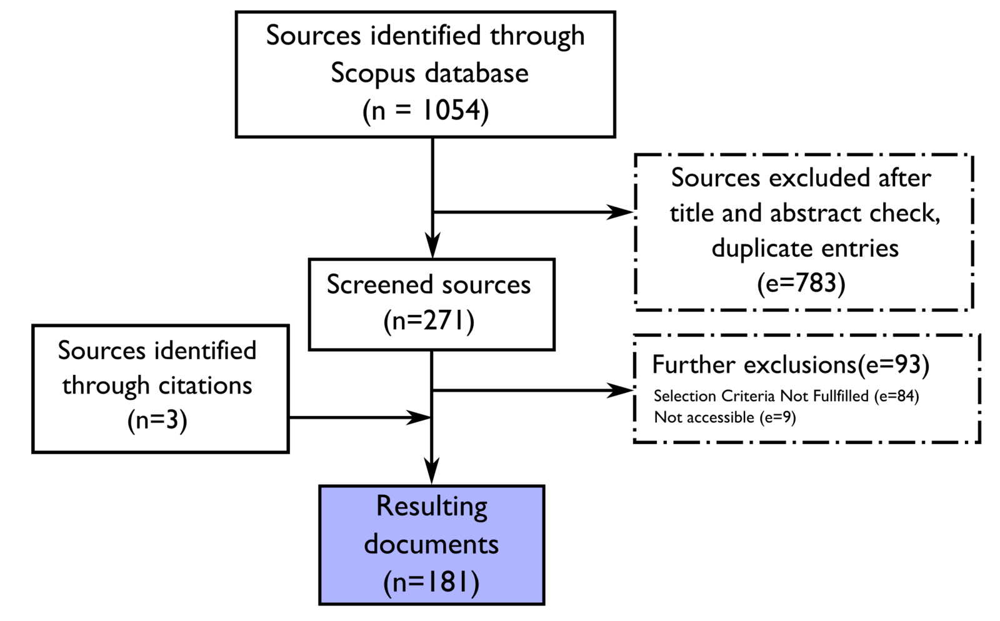
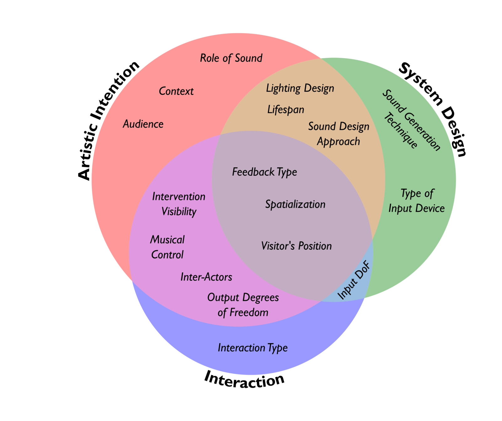
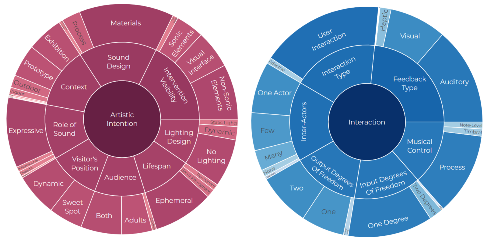
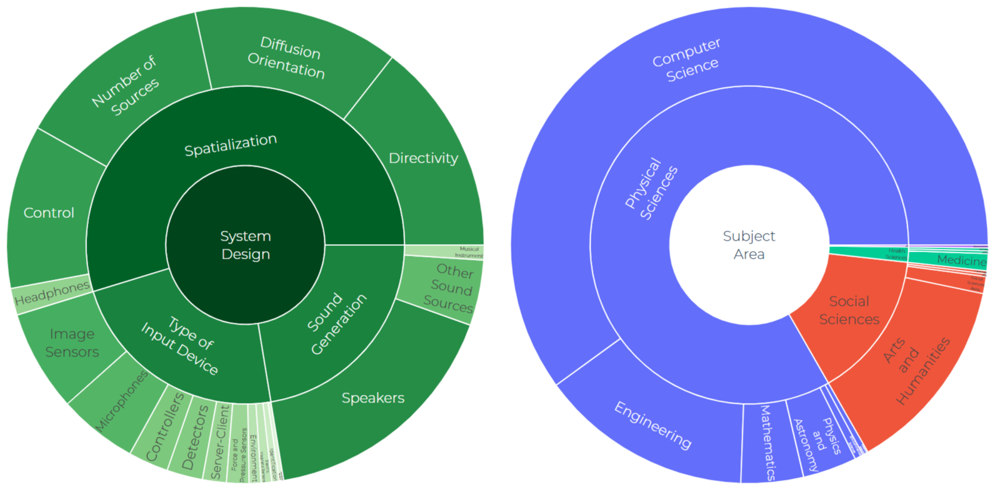
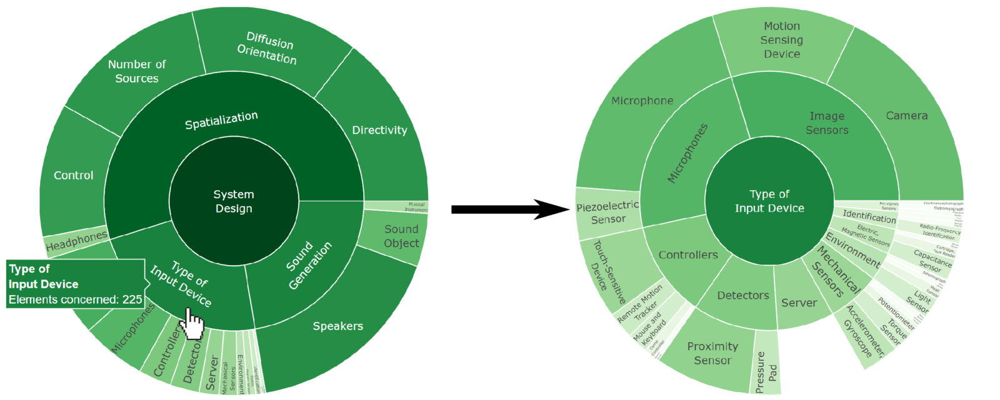
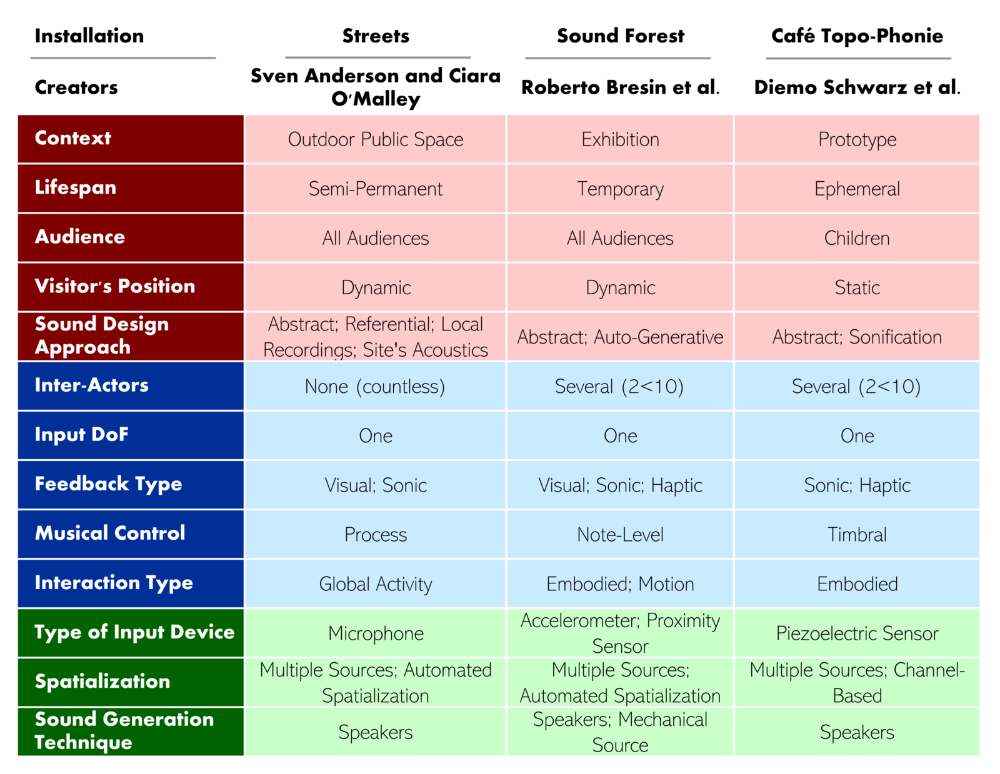

A Visualization Tool to Explore Interactive Sound Installations
Abstract
This paper presents a theoretical framework for describing interactive sound installations, along with an interactive database, on a web application, for visualizing various features of sound installations. A corpus of 195 interactive sound installations was reviewed to derive a taxonomy describing them across three perspectives: Artistic Intention, Interaction and System Design. A web application is provided to dynamically visualize and explore the corpus of sound installations using interactive charts (https://isi-database.herokuapp.com/). Our contribution is two-sided: we provide a theoretical framework to characterize interactive sound installations as well as a tool to inform sound artists and designers about up-to-date practices regarding interactive sound installations design.
Author Keywords
Interactive Sound Installations, Review, Taxonomy, Dynamic Data Visualization, Web Application
CCS Concepts
Human-centered computing → Human-Computer-Interaction:
Empirical studies in HCI
Human-centered computing → HCI design and evaluation methods: Heuristic evaluations
Applied computing → Arts and Humanities:
Media Arts; Sound and Music Computing
Introduction
In the recent years, the democratization of technological tools such as micro-controllers and sensors led to an increasing diversification of new interfaces for musical expression [1]. This democratization is associated with an unprecedented variety of practices and contexts around the creation of new musical interfaces. Focusing on interactive sound installations, existing theoretical frameworks and reviews do not account for this variety, and it is difficult to compare installations with different, sometimes opposite purposes and contexts. The goals of the present research are twofold. First, it aims at providing a theoretical framework that combines the various perspectives required for situating interactive sound installations, within a systematical literature review. Second, it proposes a tool that can be accessed by sound artists, designers and researchers to explore and identify trends regarding the design of interactive sound installation through those perspectives.
Several frameworks have been proposed to position and categorize sound art and new interfaces for musical expression. Wanderley, Birnbaum et al. defined a dimensional space allowing to characterize musical devices with properties partially derived from human-computer interaction studies [2][3]. Bandt described practices regarding sound installation design in the public realm [4]. Landy proposed a thorough theoretical framework that provides and positions various aspects of sound art and electroacoustic composition [5]. Lacey proposed three approaches and ten attributes for enduring sound installations in public spaces [6]. Other works include a dimension space to investigate collaborative interfaces [7], a taxonomy for classifying real-time musical interfaces [8] as well as frameworks for describing the design process of musical interfaces [9] and feedback musical systems [10]. However, these framework are not specific to interactive sound installations and could benefit from a review of sound installations practices.
Interactive sound installations are limited here to interactive environments in which sound is one of the main mediums of expression or communication. We consider all multimedia installations where sound is one of the input or output modality. They can be but are not limited to artistic installations. These installations rely on real-time interaction with people or consist in adaptive systems, namely, systems that respond to external conditions, such as systems that react to the state of the surrounding environment (for conciseness, the term "interactive sound installation" will include both interactive and adaptive installations). Interaction is defined here as a reciprocal action between several actors belonging to the same system, causing a modification of their state [11]. It can be characterized as an exchange of information, energy or affect [11][12]. There have been several attempts to establish a theoretical framework dedicated to interactive sound installations. Blaine and Fels identified contextual elements and design parameters for describing collaborative musical interfaces, including interactive sound installations [13]. Le Prado proposed to characterize them based on the relations between their protagonists, namely the Designer, the System and the Interactor [14]. More recently, Goudarzi proposed a taxonomy of interaction in participatory sound art and interactive sonification systems [15][16]. If these framework are useful to position interactive sound installations, they are designed to describe them through specific points of view and are not based on a systematic literature review.
We propose to reconcile those previous attempts by providing a framework in the form of a taxonomy for characterizing interactive sound installations within a wider scope and across several perspectives. This taxonomy was informed both deductively by existing frameworks and inductively, through a systematic review of the literature with a corpus describing 195 interactive sound installations. A dynamic visualization tool is provided along a web application (https://isi-database.herokuapp.com/ (accessed on April 10th, 2021)) as a tool to navigate and visualize trends across the corpus regarding the proposed taxonomy. Given the richness and variety of the installations found in the review, this visualization tool allows for the identification of common approaches and divergences regarding the design of interactive sound installations.
A Framework for Interactive Sound Installations
Literature Review
The present research is based on a literature review combining 181 documents1. Together, they are used to establish an interactive sound installation database bringing together a total of 195 installations. The documents are gathered from Elsevier’s Scopus database2, which contains published, peer-reviewed content from more than 5,000 publishers worldwide3, ensuring a certain level of quality control.
The selection criteria for retaining documents related to the nature of the depicted sound installations are the following. The documents must describe one or several interactive sound installations. Sound installations that require a real-time participation from their designer or any people that are not part of an audience are not considered, since they would extend the review to any interface for musical expression, which are beyond its scope.


Table 1 - Literature Review: Boolean search strings entered to the Scopus database
To gather the corresponding documents, several keyword combinations were entered in the database, leading to the identification of 1054 entries (see Table 1), from which two orders of selection were applied. First, documents deemed irrelevant after reading the title and abstract were excluded. Second, an in-depth reading led to further exclusions, as illustrated in Figure 1. Meanwhile, subject areas, their classification and the corresponding field along the list of Scopus’ All Science Journal Classification4 were annotated for each proceedings, book or journal to which belong the documents. Such information about the publications were retrieved through the Scopus database, but also from Scimago5 and Worldcat6.


Figure 1 - Literature Review - Document Selection Process
A Taxonomy Across Three Perspectives
In order to inform on practices relative to the design, context and purpose of interactive sound installations, a taxonomy in the sense of Bailey’s definition is proposed below [17]. As discussed above, various frameworks already exist in the literature and cover a wide range of topics, from sound art [5] to musical devices [3]. The design of the taxonomy has been informed from those, but also from empirical observations of the interactive sound installations belonging to the corpus, in addition to discussions as part of the SAD-SASK project mentioned in the acknowledgements.
The proposed taxonomy is hierarchical, from general to specific. The first layers or roots - the perspectives - are at the most abstract, conceptual level. They relate to global perspectives for enduring interactive sound installations (e.g. Artistic Intention) and are subdivided into themes. Conversely, the last layers or leaves - the taxa - are at a concrete and applied level (e.g. Use of Local Recordings). Note that most of the taxa are not mutually exclusive.
A short description of the taxonomy is provided below across all three perspectives, and their corresponding themes. Themes that are not associated with a reference are induced from empirical observations within the corpus. For a complete description including all taxa, see the application’s glossary (https://isi-database.herokuapp.com/glossary (Accessed on April 10th, 2021)).
Artistic Intention: relates to all the considerations and contextual aspects that are taken prior to the design process. It is the most conceptual perspective and concerns top-level reflections about of the early part of the creative process before implementation. From a protagonist metaphor, this aspect would relate to the designer [18].
Context: provides information about the type of location or situation in which the installation was created.
Lifespan: indicates the duration in which the installation was or is planned to remain active. It is determinant for the design process [4].
Role of Sound: derived from Pressing’s categories for sound roles in electronic media [19]. Further roles are induced from the corpus.
Visitor’s Position: visitor’s position and potential motion around or inside the installation.
Intervention Visibility: details about what can or can’t be seen from the installation.
Lighting Design: specific lighting involved by the installation.
Sound Design Approach: the materials and processes used for sound design and sound generation. Most of it is inspired from Landy’s framework [5].
Interaction: concerns all the parameters that characterize the mutual relation between the interactor and the installation [3]. This perspective is associated to the in-between reflections between the foremost intentions and the ultimate technical implementation and would relate to the inter-actor [18].
Inter-Actor: number of people involved simultaneously in the musical interaction [3].
Interaction Type: Type of Control is another name for it. It refers to the specific nature of the relation between the interactor and the installation [15].
Feedback Type: refers to the output modalities, also called feedback modalities [3].
Input and Output Degrees of Freedom: refers to the number of input and output modalities available to the user or visitor (two actual themes). It does not represent the number of input and output controls as in Birnbaum et al.’s dimension space [3].
Musical Control: refers to the level of control available to the user [3][20].
System Design: is about the practical realization of the installation, from its components to its diffusion parameters. It emphasizes on the practical realization of initial intentions as well as of interaction design, and would relate to the system [18].
Spatialization: refers to the number of sound sources used, their spatial disposition as well as their diffusion and control parameters that are used to create (or not) a spatialized musical experience for visitors [5][21].
Sound Generation Technique: concerns the nature of the installation’s sound-emitting device(s) [6].
Type of Input Device: describes the kind of device(s) that provides to the installation the data and control signals that are processed as part of the interaction. It can consist in a sensor, but also in a device containing several of them. Classification among the measurand is provided for basic sensors [22].
The design process of Interactive Sound Installations is often an iterative approach, similar to what can be observed in the field of Human-Computer Interaction and software development with back-and-forth between sound design, interaction design and technical implementation [16]. As such and despite being separately identified, the themes and taxa that belong to each of the three themes are mutually inter-related and depend of each other (see Figure 2). As an example, Spatialization is related to the System Design since it concerns, among other things, the number of sound sources and their disposition. However, it is also affected by the Artistic Intention due to its strong impact on the sound materials and their propagation. Ultimately it may also affect the Interaction, by determining, for instance, the potential number of Inter-Actors.


Figure 2: Suggestive overlap Between Perspectives: Venn Diagram
Application Implementation
A web application was developed as part of the project (https://isi-database.herokuapp.com/ (accessed on April 10th, 2021)), allowing to evaluate trends regarding the corpus’ installations across the above-mentioned taxonomy. Its development consisted both in the elaboration of a database and to its integration on a Python framework. The source code of the application is available on GitHub [23].
The database is built upon the taxonomy through an iterative process where taxa were both initialized from literature and induced when reviewing the corpus. It consists in a comma-separated values file in which installations are indicated as either belonging or not to a taxa with a binary entry (see data in [23]). Note that it was sometimes not possible to gather information for each taxon. In such situation, data was indicated as being non available.
The web application is powered by Plotly’s open-source library Dash7, a Python framework written on top of Flask8, Plotly.js and React.js9 designed for web analytics. As described below, the application includes four interactive sunburst charts that represent respectively the three perspectives of the proposed taxonomy, plus the subject areas and fields to which belong the corpus’ publications. The decision to use sunburst charts is based on the evaluation of multiple visualization paradigms during the application development. These charts were judged to be the most appropriate to visualize the taxonomy due to their ability to both render categorical data on a hierarchical structure and the relative size of its components.
Dynamic Database Visualization
The web application [24] developed for this project provides an intuitive visualization of the database, but also an efficient tool for gathering informations about interactive sound installation design, trends and practices. Its main features consist in interactive sunburst charts, but it also contains additional tools such as a glossary and a responsive list of installations.


Figure 3 - Sunburst Chart Snapshots: Artistic Intention (left) and Interaction (right)


Figure 4 - Sunburst Chart Snapshots: System Design (left) and Subject Area (right)
Powered by Plotly, the interactive sunburst charts allow to dynamically navigate through the perspectives’ multiple hierarchical layers, from global themes to taxa, by reproducing the taxonomy’s hierarchy (see Figures 3 and 4 for a snapshot). The size as well as the color10 of each of the sunbursts’ portions represent the number of elements concerned, namely the number of installations that correspond to each taxon, and the number of times the particular code for a perspective or category was used. Note that the latter may differ from the number of installations since one installation may give rise to multiple codes among a given perspective or theme. Thus, only the last layer provides the number of installations corresponding to a taxon. When hovering a section, a flag is displayed, showing the name of the section as well as the number of elements concerned. When clicking on a section that possesses further subdivisions, the sunburst evolves to a new one showing this only section and its subsequent layer (see Figure 5). When clicking on a taxon (the last layer), a table containing metadata about the corresponding sound installations and their associated reference is displayed below the chart.


Figure 5: Sunburst Chart Application Snapshot. The user can see the number of corresponding elements when hovering a portion (left). When clicking on it, a new sunburst appears, showing the corresponding sub-layer(s) (right).
To screen the database across several taxa, a dropdown list is provided to add one or more filters to the table. The application contains two additional pages. One allows to navigate through the glossary (https://isi-database.herokuapp.com/glossary (Accessed on April 10th, 2021)) while the other displays a table with metadata for all of the corpus’ installations (https://isi-database.herokuapp.com/lists (Accessed on April 10th, 2021)).
Comparison of Selected Works Through the Taxonomy
To illustrate the potential benefits from the taxonomy and the web application as well as the diversity of designs that can be embedded into it, three installations selected from the corpus will be described along a sample of selected themes for each perspective. The comparison of taxa for each installation is presented in Table 2 and described in the following paragraphs.
Designed at a tram station located in Dublin, Ireland, Streets is a semi-permanent installation designed by Sven Anderson and Ciara O’Malley for a crowded space in an urban environment [25]. In contrast, Sound Forest - Ljudskogen, by Roberto Bresin et al., was designed for a permanent exhibition in a museum in Stockholm, Sweden [26]. Finally, Café Topo-Phonie is an experimental installation designed by Diemo Schwarz et al. for an ephemeral exhibition in a museum in Paris, France [27].
Concerning the Artistic Intention, Street is an outdoor installation designed for all audiences and permanently integrated into urban infrastructures. The two latter installations were both exhibited at a museum. However, Sound Forest was designed for a permanent exhibition open to all audiences while Café Topo-Phonie, primarily targeting children, was only on display for a limited time and remained in development at the time of the exhibition. Both Streets and Sound Forest allow users to freely move when interacting with the installation. In contrast, users have to sit and stay still when using Café Topo-Phonie. Concerning the sound design approach, all three installations take use of Abstract materials [5]. However, they all use differing approaches (see Table 2).
Regarding Interaction, Streets reacts to the Global Activity of the avenue next to the tram station it is embedded to. As such, it is difficult, if not impossible, to count or differentiate the inter-actors. Conversely, both Sound Forest and Café Topo-Phonie can been approached through an embodied or tangible interface by several distinct users (a string that can be plucked in Sound Forest and a table that can be touched or scratched in Café Topo-Phonie) [16][28]. All three installations require only one input modality, however, they output different feedback types and provide distinct kinds of musical control (see Table 2) [3].
The technical implementation, or System Design of each project also reflects their diversity. They all take use of different Types of Input Device (see Table 2). While all three projects use multiple sound sources and speakers, only Streets and Sound Forest take use of automated spatialization techniques [5]. Additionally, Sound Forest also generates sounds through mechanical sources (the sound emitted by the strings).


Table 2: Description of three sound installations from the corpus along the taxonomy. The color represents the associated theme (red - Artistic Intention; blue - Interaction; green - System Design).
The use of present taxonomy allows for the identification of similarities and divergences across all perspectives. It provides a systematic framework to compare installations across multiple facets, while identifying significant trends (for instance, all three installations use abstract sound materials, require one input modality and use speakers as sound emitting devices) and specificities (for instance, all three installations have different lifespans, contexts, or types of feedback). Its versatility makes it possible to compare a very diverse range of systems, from outdoor sound installations to laboratory prototypes.
Discussion
Research Creation
The outcomes from the dynamic data visualization provided along with the literature review are multifaceted for sound artists, designer and researchers interested in interactive sound installations. It allows for an efficient and intuitive navigation to explore the corpus of 195 installations along the taxonomy, which remains complex and would be impossible to navigate in the form of a table (up to four hierarchical layers across 111 different taxa). This tool can help sound artists and researchers identify trends and retrieve corresponding documentation. Further, the corpus could be extended beyond the scope of scientific literature and generalized to wider range of installations, and types of documentation (such as webpages, artists statements, traditional media and museum archives).
Theoretical and Methodological Contributions
The proposed taxonomy provides a novel and insightful framework for investigating interactive sound installations. Compared to existing typologies and taxonomies (e.g. [29]), this framework has a greater scope as it combines perspectives from sound art, human-computer-interaction and engineering, but at the expense of technical details. In addition, the database resulting from the review provides insights on trends and practices regarding design of interactive sound installations, which have been reported in a separate publication [30].
Limitations
Various aspects that could be important to characterize the installations are not included in the taxonomy, such as a description of sound production and manipulation, mapping and software parameters as well as user experience assessment [5][9][20][31]. Further, while the present taxonomy is induced from the database’s sound installation and deduced from existing theoretical frameworks, the categorization itself has been defined by the authors, which has a major influence on the classification of the installations. In addition, the database visualization does not reflect the various inter-relations between all three perspectives (see Figure 2). Despite not being analyzed here, the corpus provided along with the application also has several limitations. The queries used as well as the Scopus database may not allow to screen exhaustively all scientific publications. Furthermore, the consequent size of the corpus did not allow for a thorough analysis of cross-references. Most importantly, the corpus only consists in peer-reviewed scientific literature. However, it is reasonable to think that installations are not usually documented through scientific publications but rather through artists’ statements for gallery installations and program notes for performances, through auto-documentation, or through alternative medias. Extending the corpus to these other types of documentation would likely allow to expand the taxonomy with elements related with aesthetics, musical identity, and relation with technology.
Conclusion and Future Work
The current project provides a database for interactive sound installations, a theoretical framework for positioning such systems as well as a dynamic tool for visualize installations within this framework. Despite the limitations mentioned above, the proposed contributions can inform sound artists and designer about interactive sound installations design practices, while providing a theoretical framework to characterize them.
Future directions include the improvement of the taxonomy’s coverage, by integrating for example other technical details such as mapping parameters [31]. The corpus itself could gain in coverage, for instance by allowing application users to add their own installation to it. The dynamic visualization could be further improved by providing other visualization paradigms. Some of the potential directions for its improvement include a way to visualize the installations across the taxonomy independently as well as their geographic spread. Additional media such as video or audio excerpts could also be provided. Feedback from sound artists, designers or anyone that would be potentially interested to use the application are welcome and should help orienting future improvements. In a nearer future, it is indented to extend the visualization of the framework on the associated web application using a network visualization displaying installations as nodes. From the exploitation of structural vibration of urban infrastructures [32] to interactive sandboxes [33], sound diffusion systems embedded in a boat [34] or even the sonification of an ants colony [35], there is a great variety of approaches that can be accounted for thanks to the proposed taxonomy.
Acknowledgements
We would like to thank Nicola Giannini and Julien Champagne for their input on the elaboration of the taxonomy, through discussions in the context of the Sound Art Documentation: Spatial Audio and Significant Knowledge research project led by Guillaume Boutard. We also would like to thank Christian Frisson for his help in the application development and proofreading as well as Vincent Cusson for providing substantial improvements for the paper.
This research is supported by grants from the Social Sciences and Humanities Research Council of Canada (SSHRC) to CG and the Natural Sciences and Engineering Research Council of Canada (NSERC) to MW.
Footnotes
All documents are available through the web application’s list of installations.
↩- ↩
https://www.elsevier.com/solutions/scopus/how-scopus-works/content/content-policy-and-selection
↩https://service.elsevier.com/app/answers/detail/a_id/15181/supporthub/scopus/
↩- ↩
- ↩
- ↩
- ↩
- ↩
Except for the fields sunburst, in which colors help to differentiate the different Subject Areas.
↩
Citations
Medeiros, Carolina Brum, and Marcelo M. Wanderley. 2014. “A Comprehensive Review of Sensors and Instrumentation Methods in Devices for Musical Expression.” Sensors 14 (8): 13556–91. https://doi.org/10.3390/s140813556.
↩Wanderley, Marcelo. “Performer-Instrument Interaction: Applications to Gestural Control of Music.“ PhD Thesis, Université Pierre et Marie Curie - Paris 6. Paris, France, 2001.
↩Birnbaum, D., R. Fiebrink, J. Malloch, and M. M. Wanderley. “Towards a Dimension Space for Musical Devices.” In International Conference on New Interfaces for Musical Expression (NIME05), 192–95. Vancouver, Canada, 2005.
↩Bandt, R. “Designing Sound in Public Space in Australia: A Comparative Study Based on the Australian Sound Design Project’s Online Gallery and Database.” Organised Sound 10, no. 2 (2005): 129–40. https://doi.org/10.1017/s1355771805000774.
↩Landy, Leigh. Understanding the Art of Sound Organization. Cambridge, Mass.: The MIT Press, 2007.
↩Lacey, J. “Sonic Placemaking: Three Approaches and Ten Attributes for the Creation of Enduring Urban Sound Art Installations.” Organised Sound 21, no. 2 (2016): 147–59. https://doi.org/10.1017/S1355771816000078.
↩Hattwick, Ian, and Marcelo Wanderley. 2012. “A Dimension Space for Evaluating Collaborative Musical Performance Systems.” In International Conference on New Interfaces for Musical Expression. Ann Arbor, United States. http://ianhattwick.com/a-dimension-space-for-evaluating-collaborative-musical-performance-systems/.
↩Paine, Garth. 2010. “Towards a Taxonomy of Realtime Interfaces for Electronic Music Performance.” In NIME 2010. Sydney, Australia.
↩Morreale, Fabio, Antonella De Angeli, and Sile Modhrain. 2014. “Musical Interface Design: An Experience-Oriented Framework.” In NIME 2014.
↩Sanfilippo, Dario, and Andrea Valle. 2013. “Feedback Systems: An Analytical Framework.” Computer Music Journal 37 (2): 12–27. https://doi.org/10.1162/COMJ_a_00176.
↩Mugnier, Patrice, and Kuei Yu Ho. Design interactif. EYROLLES Edition. EYROLLES, 2012.
↩Lee, H.Y., J.Y. Kim, and W.H. Lee. “Interactive Digital Art Based on User’s Physical Effort with Sensor Technology.” International Journal of Software Engineering and Its Applications 8, no. 3 (2014): 211–16. https://doi.org/10.14257/ijseia.2014.8.3.19.
↩Blaine, Tina, and Sidney Fels. 2003. “Collaborative Musical Experiences for Novices.” Journal of New Music Research 32 (4): 411–28. https://doi.org/10.1076/jnmr.32.4.411.18850.
↩Le Prado, Cécile, and Stéphane Natkin. “Design Process for Interactive Sound Installations: The Designer, the Interactor and the System.” In SMC/ICMC. ATHENS, Greece, 2014. https://hal.archives-ouvertes.fr/hal-01126429.
↩Goudarzi, V., and A.-M. Gioti. “Engagement and Interaction in Participatory Sound Art.” In SMC 2016 - 13th Sound and Music Computing Conference, Proceedings, 179–84, 2019.
↩Goudarzi, V. “Exploring a Taxonomy of Interaction in Interactive Sonification Systems.” Advances in Intelligent Systems and Computing 1253 AISC (2021): 140–45. https://doi.org/10.1007/978-3-030-55307-4_22.
↩Bailey, Kenneth D. Typologies and Taxonomies: An Introduction to Classification Techniques. SAGE, 1994.
↩Prado, Cécile le, and Stéphane Natkin. “Design Process for Interactive Sound Installations: The Designer, the Interactor and the System.” In SMC/ICMC. ATHENS, Greece, 2014. https://hal.archives-ouvertes.fr/hal-01126429.
↩Pressing, Jeff. “Some Perspectives on Performed Sound and Music in Virtual Environments.” Presence: Teleoperators and Virtual Environments 6, no. 4 (August 1, 1997): 482–503. https://doi.org/10.1162/pres.1997.6.4.482.
↩Malloch, Joseph, and Marcelo Wanderley. “Embodied Cognition and Digital Musical Instruments: Design and Performance.” In The Routledge Companion to Embodied Music Interaction, edited by Micheline Lesaffre, Marc Leman, and Pieter-Jan Maes, 440–49. Routledge, 2017.
↩Bandt, R. “Sound Installation: Blurring the Boundaries of the Eye, the Ear, Space and Time.” Contemporary Music Review 25, no. 4 (2006): 353–65. https://doi.org/10.1080/07494460600761021.
↩White, R. M. “A Sensor Classification Scheme.” IEEE Transactions on Ultrasonics, Ferroelectrics, and Frequency Control 34, no. 2 (March 1987): 124–26. https://doi.org/10.1109/T-UFFC.1987.26922.
↩- ↩Fraisse, V. (2021). Source code for Dynamic visualization of Interactive Sound Installations. Retrieved from https://github.com/valerianF/ISI-Database
- ↩Fraisse, V. (2021). Web application for Dynamic visualization of Interactive Sound Installations. Retrieved from https://isi-database.herokuapp.com
Anderson, S. “Microsound in Public Space: Compositional Methods to Enhance Site-Specific Sound.” Organised Sound 13, no. 1 (2008): 51–60. https://doi.org/10.1017/S1355771808000071.
↩Frid, E., H. Lindetorp, K.F. Hansen, L. Elblaus, and R. Bresin. “Sound Forest - Evaluation of an Accessible Multisensory Music Installation.” In Conference on Human Factors in Computing Systems - Proceedings, 2019. https://doi.org/10.1145/3290605.3300907.
↩Schwarz, Diemo, Grégoire Lorieux, Emmanuelle Lizère, Ariadna Alsina Tarrès, and Frédéric Bevilacqua. “A Topo-Phonic Table for Tangible Sonic Interaction.” In International Computer Music Conference (ICMC). Shanghai, China, 2017. https://hal.archives-ouvertes.fr/hal-01575290.
↩Franinovic, Karmen, and Yon Visell. “New Musical Interfaces in Context: Sonic Interaction Design in the Urban Setting.” In Proceedings of the 7th International Conference on New Interfaces for Musical Expression, 191–96. NIME ’07. New York, NY, USA: Association for Computing Machinery, 2007. https://doi.org/10.1145/1279740.1279776.
↩Card, Stuart K., Jock D. Mackinlay, and George G. Robertson. “A Morphological Analysis of the Design Space of Input Devices.” ACM Transactions on Information Systems 9, no. 2 (April 1, 1991): 99–122. https://doi.org/10.1145/123078.128726.
↩Fraisse, V.; Wanderley M.M.; Guastavino C. Comprehensive Framework for Describing Interactive Sound Installations: Highlighting Trends through a Systematic Review. Multimodal Technol. Interact. Forthcoming.
↩Hunt, Andy, Marcelo M. Wanderley, and Matthew Paradis. 2003. “The Importance of Parameter Mapping in Electronic Instrument Design.” Journal of New Music Research 32 (4): 429–40. https://doi.org/10.1076/jnmr.32.4.429.18853.
↩Odland, B., and S. Auinger. “Reflections on the Sonic Commons.” Leonardo Music Journal 19 (2009): 63–68. https://doi.org/10.1162/lmj.2009.19.63.
↩Dewitz, B., R. Wiche, C. Geiger, F. Steinicke, and J. Feitsch. “AR Sound Sandbox: A Playful Interface for Musical and Artistic Expression.” Lecture Notes of the Institute for Computer Sciences, Social-Informatics and Telecommunications Engineering, LNICST 215 (2018): 59–76. https://doi.org/10.1007/978-3-319-73062-2_5.
↩Helyer, Nigel, Daniel Woo, and Francesca Veronesi. “Artful Media: The Sonic Nomadic: Exploring Mobile Surround-Sound Interactions.” IEEE MultiMedia 16, no. 2 (April 2009): 12–15. https://doi.org/10.1109/MMUL.2009.38.
↩Auson, K.S. “Oh!M1gas: Biomimetic Stridulation Environment,” 352–53, 2011. https://doi.org/10.1145/2019342.2019351.
↩